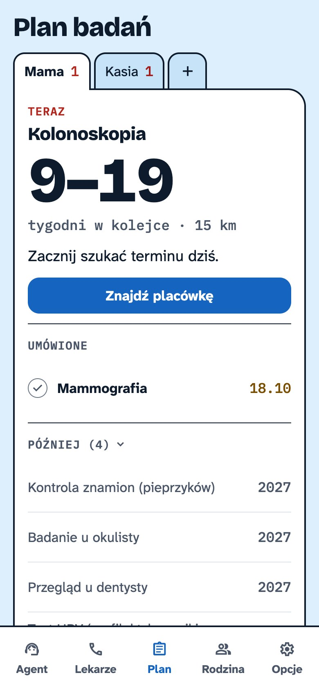
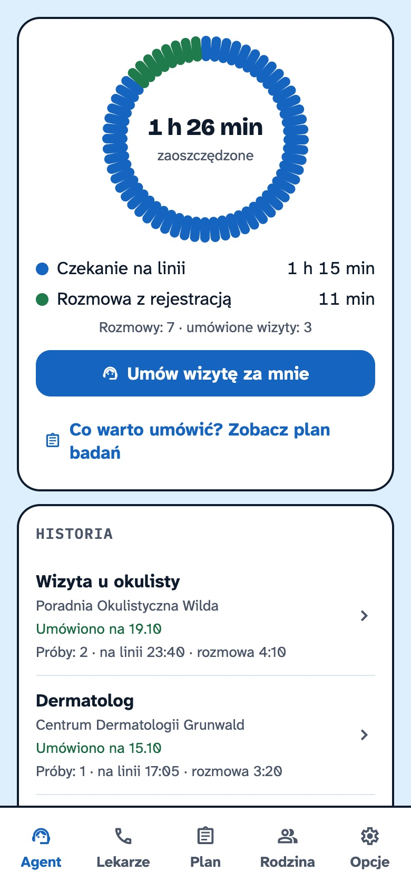
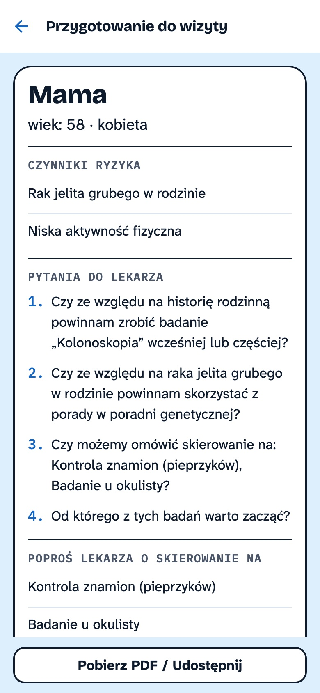

Jak to działa
Od ankiety do umówionej wizyty — 5 kroków

1. Ankieta

2. Plan: co i kiedy

3. Gdzie najszybciej

4. Agent AI umawia

5. Termin w kalendarzu
Jak to działa
1. Ankieta

2. Plan: co i kiedy
3. Gdzie najszybciej

4. Agent AI umawia
5. Termin w kalendarzu
Agent AI
Kiedy możesz?
Zaoszczędzony czas
Dla opiekunów

Rodzina

Przed wizytą

Tryb senior